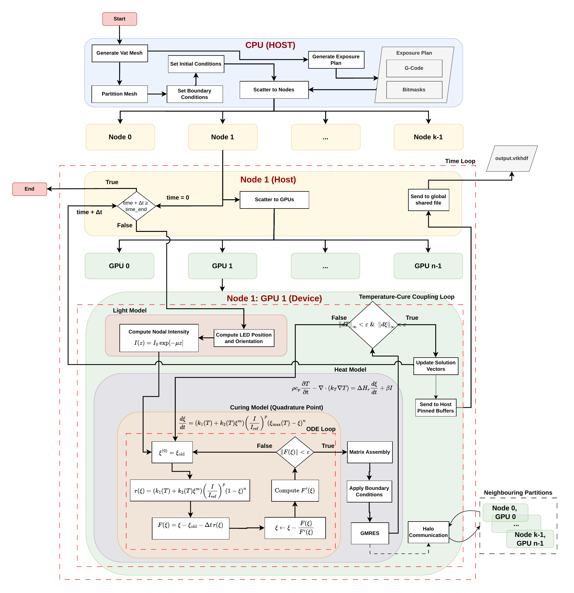

Computational Modelling of Vat Photopolymerization — AM Bench 2025 Challenge

GPU workflow for the vat photopolymerization finite-element framework. The dominant loop keeps field state resident on the device and limits synchronization to required exchange and solver points.